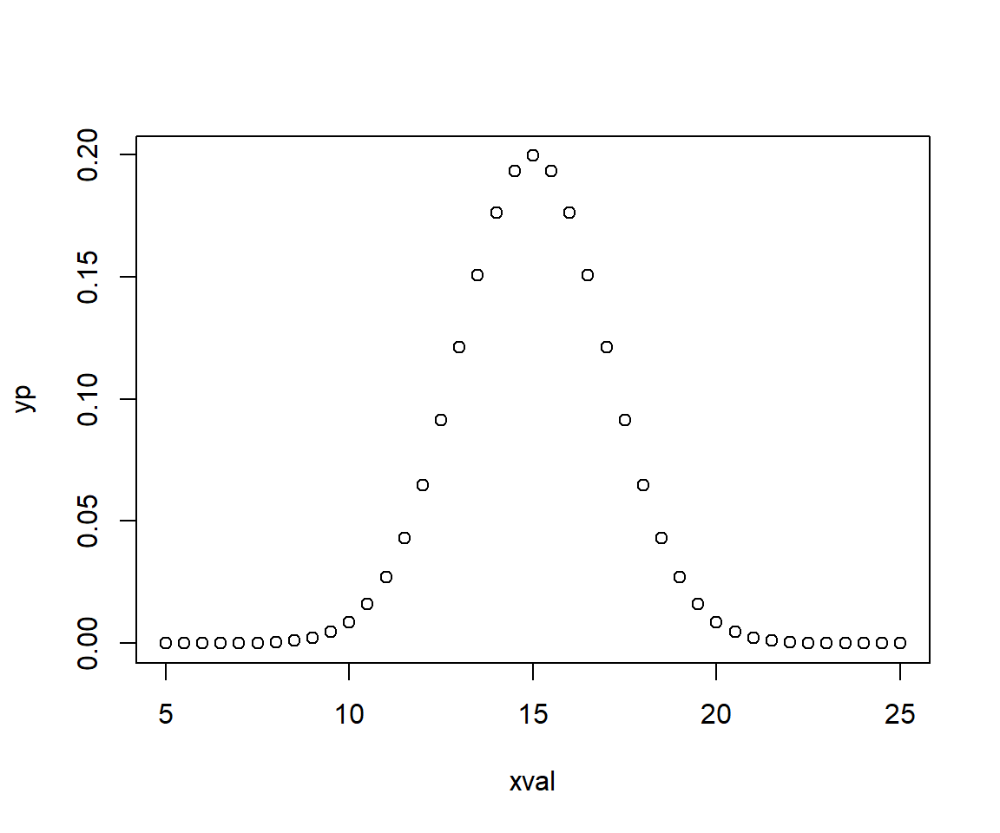

Table of Content
Probability Distribution
A statistical distribution, or probability distribution, describes all the possible values and likelihoods that a random variable (a random variable is a variable whose value is unknown or a function that assigns values to each of an experiment’s outcomes) can take within a given range. This range will be bounded between the minimum and maximum possible values, but precisely where the possible value is likely to be plotted on the probability distribution depends on a number of factors. These factors include the distribution’s mean (average), standard deviation, skewness, and kurtosis (Source)..
In probability theory and statistics, a probability distribution is the mathematical function that gives the probabilities of occurrence of different possible outcomes for an experiment.It is a mathematical description of a random phenomenon in terms of its sample space and the probabilities of events (subsets of the sample space).(Wikipedia).
Probability Density function (PDF) is a statistical expression that defines a probability distribution (the likelihood of an outcome) for a discrete random variable (e.g., a stock or ETF) as opposed to a continuous random variable.
The normal distribution is a common example of a PDF, forming the well-known bell curve shape. It is also known as the Gaussian distribution, is a probability distribution that is symmetric about the mean, showing that data near the mean are more frequent in occurrence than data far from the mean.
The mean and standard deviation can be related to the Guassian distribution - that gives the probability of observing a particular value of x. For a finite number of measurements, the Gaussian distribution can be approximated as:
https://rpubs.com/dgosser/802164

Suppose, a non-contaminates sites, the average (mean) soil As is 15 mg/kg with a standard deviation of 2. Substituting this into the Gaussian distribution formula:
s <- 2 # standard deviation
xmean <- 15 # mean
xval <- seq(5, 25,by=0.5) # data
xval## [1] 5.0 5.5 6.0 6.5 7.0 7.5 8.0 8.5 9.0 9.5 10.0 10.5 11.0 11.5 12.0
## [16] 12.5 13.0 13.5 14.0 14.5 15.0 15.5 16.0 16.5 17.0 17.5 18.0 18.5 19.0 19.5
## [31] 20.0 20.5 21.0 21.5 22.0 22.5 23.0 23.5 24.0 24.5 25.0No we can calculate Gaussian distribution using above formula
# here we calculate a gaussian distribution
yp <- (1/(s*sqrt(2*pi)))*exp(1)^((-(xval-xmean)^2)/(2*s^2))
yp## [1] 7.433598e-07 2.514754e-06 7.991871e-06 2.385932e-05 6.691511e-05
## [6] 1.762978e-04 4.363413e-04 1.014524e-03 2.215924e-03 4.546781e-03
## [11] 8.764150e-03 1.586983e-02 2.699548e-02 4.313866e-02 6.475880e-02
## [16] 9.132454e-02 1.209854e-01 1.505687e-01 1.760327e-01 1.933341e-01
## [21] 1.994711e-01 1.933341e-01 1.760327e-01 1.505687e-01 1.209854e-01
## [26] 9.132454e-02 6.475880e-02 4.313866e-02 2.699548e-02 1.586983e-02
## [31] 8.764150e-03 4.546781e-03 2.215924e-03 1.014524e-03 4.363413e-04
## [36] 1.762978e-04 6.691511e-05 2.385932e-05 7.991871e-06 2.514754e-06
## [41] 7.433598e-07plot(xval,yp) 
calculates the probability of observing a given value. Cumulative Density function: calculates the probability of an observation equal or less than a value